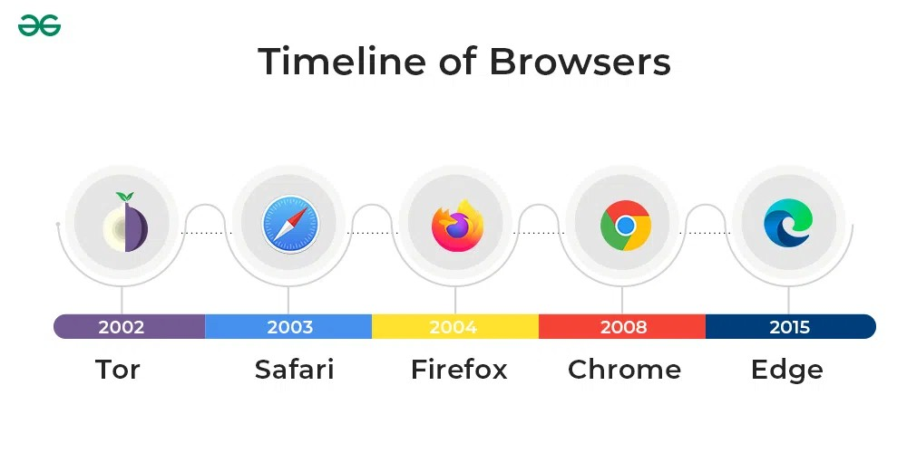

Timeline of Browser Development

| Year | Event | Significance | Key players |
|---|---|---|---|
| 1990 | Developed the first ever browser named “WorldWideWeb” at CERN. | Was the only web browser at that time and laid foundation for future browsing technologies. | Tim Berners-Lee |
| 1993 | Developed "Mosaic" by NCSA at the University of Illinois. | First graphical web browser that developed a user friendly interface with multimedia usage on the Web. | NCSA |
| 1994 | Development of Netscape Navigator and release to the public. | Netscape was the first web browser to be released to the public. | Marc Andreessen |
| 1995 | Internet Explorer was released by Microsoft. | Release of Internet Explorer resulted in race of attractive user friendly browsers causing the start of the BROWSING WARS. | Microsoft |
| 1996 | Opera was released. | Opera was one of the first browsers to implement features like pop-up blocking and tabbed browsing. | Opera Software |
| 1998 | Netscape made code open source creating development of "Mozilla". | Allowed for the creation of a community-user managed browser, leading to the development of Firefox. | Firefox/Netscape |
| 2003 | Apple released Safari. | Safari was originally developed for apple product users but was later made available for Windows users as well which helped gained its popularity. | Apple |
| 2008 | Google Chrome was released. | Chrome quickly gained popularity due to its speed, simplicity, and security features across the world. It still remains one of the most widely used browsers today. | |
| 2015 | Explorer was released with new name Microsoft Edge. | Edge was designed to be a lightweight and fast browser, with features like Cortana integration. Most windows devices come with edge pre installed. | Microsoft |